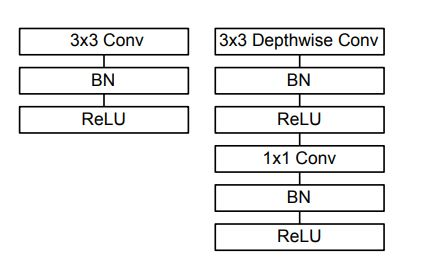

This network employs skip
connections like ResNet architecture in contrast to version
1. It helps the model in faster training and to build deeper
networks. There are also linear bottlenecks present in the
middle of layers. It helps in two ways as we reduce the
number of input channels:
- With depthwise convolution,
the model size is reduced
- At inference time, memory
usage is low. V2 denotes version 2 of mobilenet and 1.0X
uses the original parameter settings.
More details can be found
here.

Left: Standard convolutional layer with batchnorm and
ReLU. Right: Depthwise Separable convolutions with Depthwise
and Pointwise layers followed by batchnorm and ReLU.